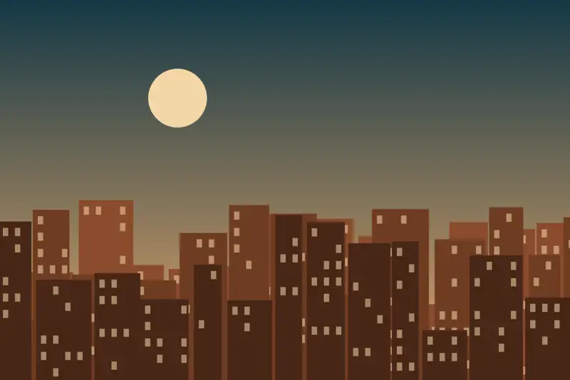
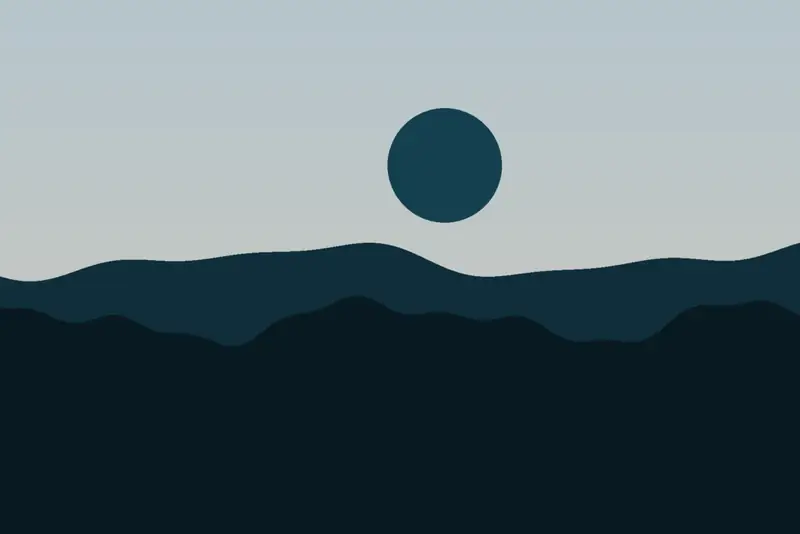
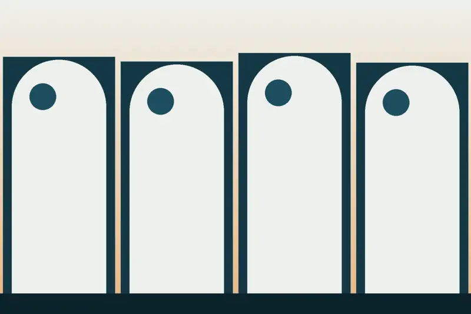
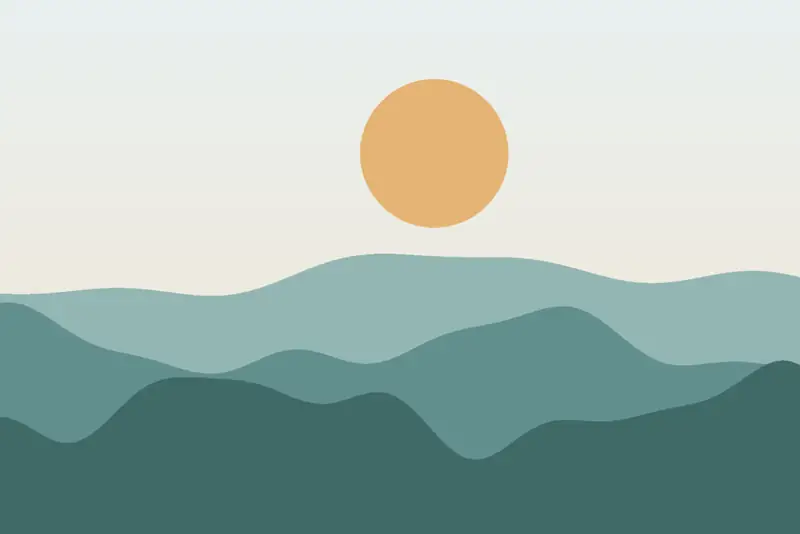
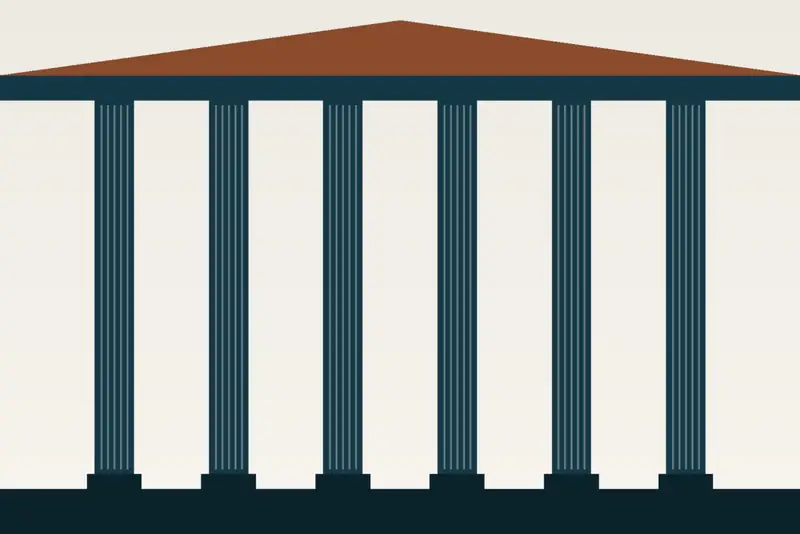
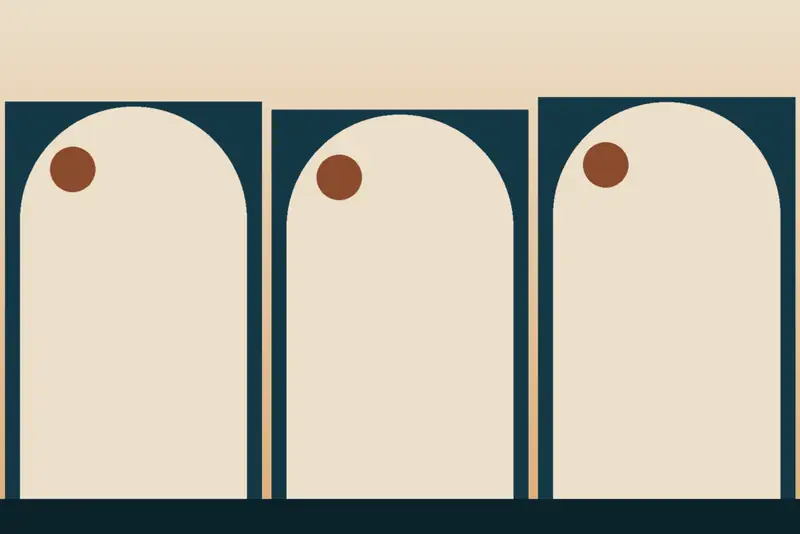
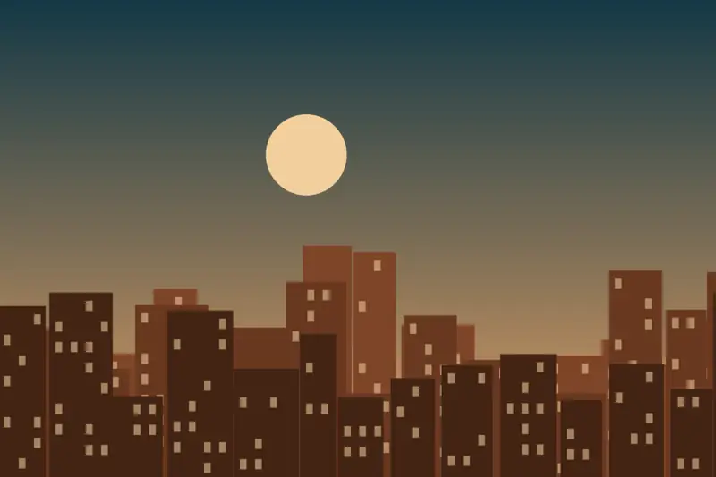

Individual y doble
Para quien viaja solo o en pareja, en el corazón de la Parte Vieja. Habitaciones insonorizadas con TV, calefacción y WiFi libre.
Pedir reserva →
Para familias, parejas o «viajeros solitarios», a unos pasos de los bares de pintxos.
Pensión inaugurada en el año 2000 en la calle Fermín Calbetón, en pleno centro. «¡No vendemos camas!»: recomendaciones de ocio y cultura basadas en su experiencia.
La Parte Vieja es zona peatonal: hay dos parkings privados muy cercanos, en la Avenida del Boulevard y en la calle Okendo.

Individual, doble y doble familiar con 3 camas. Las imágenes son ilustraciones y no muestran las habitaciones reales.

Para quien viaja solo o en pareja, en el corazón de la Parte Vieja. Habitaciones insonorizadas con TV, calefacción y WiFi libre.
Pedir reserva →
Para familias que buscan comodidad y cercanía, perfecta para disfrutar juntos de la Parte Vieja. Con TV, calefacción y WiFi libre.
Pedir reserva →


C/ Fermín Calbetón 5-2º · 20003 Donostia-San Sebastián, en la Parte Vieja.